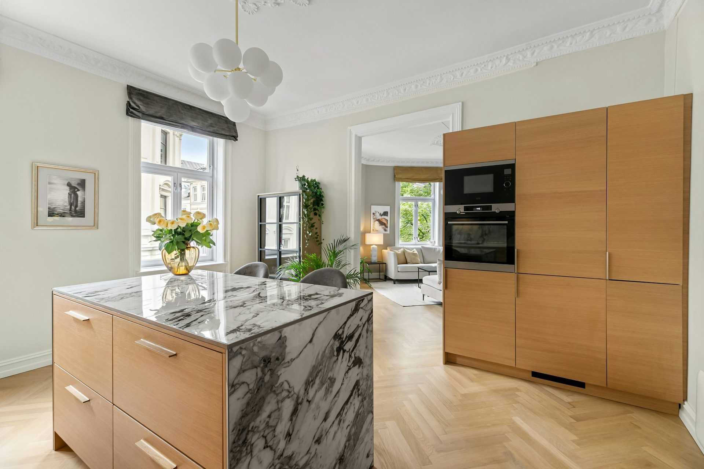
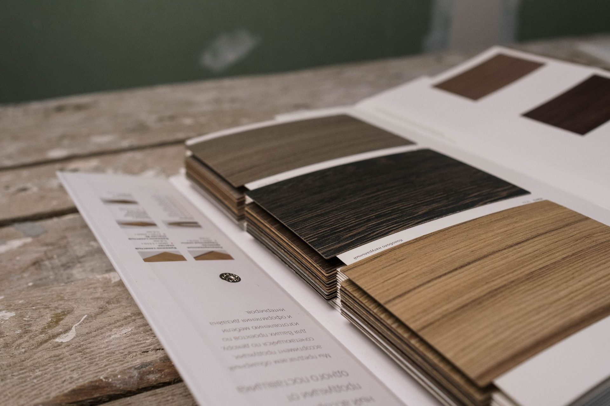

Custom kitchens,
Rockhampton.
Every kitchen drawn from a blank page for one room and one household — specified to the millimetre, delivered assembled and installed by our own team.


Collection 01 · From $15,000
Essence
Handleless, quiet, exact. Soft-matte doors on Blum soft-close runners with a stone benchtop. Our entry to bespoke — and still nothing like a flat pack.
- 18mm moisture-resistant carcasses, laser-bonded edging
- Blum soft-close hinges and runners throughout
- 20mm engineered stone benchtop, eight colours
- Handleless rail or slimline aluminium profile
- Design, documentation and installation included

Collection 02 · From $26,000
Maison
What most Rockhampton families build. Timber veneer against a full-height stone splashback, a waterfall island, integrated lighting and a butler’s pantry behind a hidden door.
- Natural timber veneer, two-pack or Fenix matte doors
- 20–40mm stone or porcelain, mitred waterfall ends
- Full-height stone or glass splashback
- Blum Legrabox drawers with internal organisers
- Integrated LED task lighting and appliance garage
- Butler’s pantry available from $4,000

Collection 03 · From $47,000
Atelier
No constraints. Book-matched slabs, curved and fluted cabinetry, solid brass, wine walls and a pantry built like a jewellery box. One project at a time.
- Book-matched slabs, curved and fluted cabinetry
- Solid brass, bronze or nickel hardware
- Wine wall, coffee station, appliance garages
- Hand-finished timber in oil or rubbed lacquer
- Joinery carried through adjoining rooms
- Principal designer on site throughout
Compare honestly
Why two quotes for the
same kitchen differ by $20,000.
It is rarely the design. It is these seven lines. Ask every company you speak to in Rockhampton to answer them in writing — including us.
| What you are actually buying | Bilt & Co | Custom cabinetmaker | Kitchen retailer or franchise |
|---|---|---|---|
| Who designs it | The person who measured your room | Usually the maker, in person | A salesperson, then a designer elsewhere |
| Carcass board | 18mm moisture-resistant | Typically 18mm, varies by maker | 16–18mm, varies by range |
| Hardware | Blum, lifetime warranty | Usually Blum or Hettich | Depends on the range you pick |
| Lead time | 8–12 weeks | 12–20 weeks, often longer | 10–16 weeks |
| Quote | Fixed and itemised before you start | Often estimated, refined later | Fixed, but showroom cost is in it |
| Who installs it | Our own employed team | Usually the maker | Commonly subcontracted |
| Typical 7m kitchen | $26,000 – $42,000 | $35,000 – $60,000 | $30,000 – $55,000 |
The two right-hand columns describe common market practice in Central Queensland, not any particular business, and good cabinetmakers beat these figures regularly. Always get the specification in writing before you compare prices.
The specification
What is actually
in the price.
Most kitchen quotes describe a look. This is the build. Ask any other company you are talking to for the same six lines in writing — it is the fastest way to understand why two quotes for the “same” kitchen are thousands apart.
| Component | What we specify | Why it matters here |
|---|---|---|
| Carcass | 18mm moisture-resistant board | 16mm standard board swells the first time water reaches a joint. In this climate that is when, not if. |
| Edging | Laser-bonded, no glue line | Hot-melt glued edging lifts in heat and humidity. Laser bonding leaves no seam for it to start from. |
| Hinges | Blum soft-close, lifetime warranty | The part you touch most and notice least until it sags. Blum carries a lifetime mechanical warranty. |
| Runners | Blum full-extension | The whole drawer comes out, not two thirds. You use the back of every drawer instead of losing it. |
| Benchtop | Stone, porcelain or laminate | Porcelain and sintered stone are the best performers in a room that gets afternoon sun. |
| Install | Our own team, adjustable legs | Rockhampton floors are rarely level. Adjustable legs and scribed fillers mean that is our problem, not yours. |
Every one of these is standard across all three collections. The collections differ in doors, benchtop and hand-work — never in the parts that determine how long the kitchen lasts.
What moves the number
Four things
set your price.
In order of impact. Everything else is rounding, which is why we can quote a realistic range on the phone before we have seen your room.
Run length
The single biggest factor. We price per linear metre of cabinetry, so a 4m kitchen and an 8m kitchen are genuinely different projects. Measure your runs and the estimator will give you a real range.
Benchtop
Laminate is included. Engineered stone adds roughly $1,750 on a compact run, porcelain more again, natural stone more again. It is the largest single upgrade most people make. Compared here.
Doors
Where taste lives, and where a budget flexes most safely. Laminate and matte at the bottom, two-pack in the middle, timber veneer above. A beautiful door on cheap hardware is a false economy; the reverse is merely patient.
Fit-out
Pull-downs, blind-corner pull-outs, carousels and push-to-open motion, each priced individually. Cheaper designed in than retrofitted, because the cabinet has to be built to suit. All eight options.
Who we build for
Not every kitchen
is a renovation.
Roughly half of what we build is not somebody replacing a tired kitchen. Each of these has its own constraints, its own pricing and its own page.
From $15,000
New builds
Upgrading from the builder’s standard, worked against your construction programme.
More →From $6,500
Granny flats
Secondary dwellings and under-house conversions, specified for the second tenant.
More →From $5,300
Tiny homes
Compact runs where every millimetre counts, with full-size hardware.
More →From $2,400
Kitchenettes
Studios, offices and short-stay rooms. A bench, a sink and storage that earns its place.
More →Trade pricing
Builders
Held specifications for repeating layouts. Supply only, or supply and install.
More →Rockhampton, specifically
Three rooms we
see constantly.
Housing stock here is distinctive, and the same three projects come across our table most weeks.
Tell us about yours →- The high-set under-house conversion. Enclosing beneath an older Queenslander to make a second living space or flat. Floors are rarely level and walls are rarely square, so we measure what is actually there and scribe to it rather than trusting the plan.
- The 1970s brick renovation. Small, closed-off kitchens with a load-bearing wall between the cooking and living space. Half the value is in what comes out, so we bring a builder through before quoting rather than after.
- The new build upgrade. A house under construction where the standard kitchen in the contract does not match the rest of the build. Worth raising with your builder before the slab, while services can still move cheaply.
Also part of the kitchen
The rooms that make it work.

From $4,000
Butler's pantries
Second sink, bulk storage, appliance bench, hidden door. The room that keeps the kitchen photograph-ready.
Explore →
From $3,600
Wardrobes & joinery
Walk-in robes, laundries, vanities, media walls and studies — same hands, same finishes, same standard.
Explore →
Free guide
2026 price guide
What each surface costs, how it behaves in a CQ summer, and where your money is best spent first.
Explore →In their words
The people who already
cook in one.
“For what we paid compared to what similar kitchens were costing elsewhere, we’re extremely happy with it.”
Rockhampton
“Could not be happier with our kitchen. The funny thing is, pretty much everyone who’s come over since we installed it has asked who did our kitchen and assumed we spent a lot more than we actually did.”
Gladstone
“Once we saw it in person, it was a pretty easy decision. It looked even better than we expected.”
Caboolture
Frequently asked
Kitchen questions, answered
If your question is not here, call the studio. We would rather talk it through than have you guess.
Ask us directly →What is the difference between a custom kitchen and a flat pack?
A flat pack is built from a fixed catalogue of cabinet sizes, so your room gets filled with filler panels and compromise. A Bilt & Co kitchen is drawn to the millimetre for your walls, your appliances and your height. We also use 18mm moisture-resistant board, laser-bonded edging and Blum hardware as standard, where flat packs typically use 16mm board, glued edging and unbranded runners.
Do you replace just doors and benchtops?
Yes. If your carcasses are sound and the layout works, replacing doors, drawer fronts, hardware and the benchtop can transform a kitchen for a fraction of a rebuild. We will tell you honestly at the first visit which option makes sense — even when the smaller job is worth less to us.
Which benchtop is best in Central Queensland?
Engineered porcelain and sintered stone are the most forgiving here — heat resistant, UV stable and non-porous, which matters when a benchtop sits in afternoon sun. Natural marble is the most beautiful and the least forgiving. We will show you both with real offcuts, in your own kitchen light.
How long will I be without a kitchen?
Typically seven to ten working days on site, with a two to three day gap while stone is templated and cut. We can set up a temporary kitchen and we always keep water and a fridge running.
Can you work with my architect or builder?
Constantly. We read full documentation sets, issue service and setout drawings back to your team, and attend site meetings. Bring us in early and the joinery will be better for it.
Where we work
From the Fitzroy to the Capricorn Coast — no travel loading.
Our workshop and our installers are both local, so a Yeppoon kitchen costs exactly what a Rockhampton kitchen costs.

The next step
Bring us your plans and
your worst frustration.
Ninety minutes at your kitchen table, with your plans, your photographs and your budget in front of us. You leave with a concept direction, a realistic investment range and no obligation whatsoever.